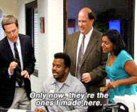
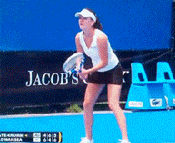

I am a freelance digital project manager with more than six years of experience in Paris, France and Edmonton (AB), Canada. Passionate about new technologies and graduated from a business school, I love technical challenges and working with developers.
Skills
Languages
- French : native
- English : fluent
- Spanish : fluent
Tools and CMS
- Balsamiq, InVision
- GitHub, Sublime
- Jira Agile, Trello
- Word, Powerpoint, Excel, Project
- Google Adwords, Analytics, Webmastertool
- Google apps
- Survey Monkey, Mailchimp
- Prestashop, Wordpress
Web development
- Expert : Google-fu
- Advanced : HTML, CSS3
- Beginner : Javascript, Jquery
- Notions : PHP
Graphic Design
- Illustrator, Inkscape
- Photoshop, GIMP
- Balsamiq
Freelance web consultant
- Digital marketing : SEO, SEM, Websites content management, translation (english or spanish to french)
- Web design and website creation (static, wordpress, prestashop)
- Volunteer Website creation : Au fil du temps (Artisan Clockmaker), ACF Handisport (Handibike team, France), Echotrip (Artistic blog)
CasterlandCanada's largest supplier of casters
Philo-SportSport and Philosophy
Au fil du tempsFrench Artisan Clockmaker
Darpana.frInternet of Things Sport and Health
Tell me about your project!
Casterland
Casterland is Canada's largest and most complete supplier of casters, wheels, and material handling equipment. Bug fix, design improvement, Shopify, Local SEO, Google Adwords campaigns

Darpana
E-Shop : activity and sport watches and other objects connected Prestashop, Responsive, logo creation, Adwords campaigns

Philo-Sport
An innovative way to practice sport while exploring Philosophy concepts Web design, Wordpress, Responsive

Au fil du temps
(Volunteer project) Artisan clockmaker from France Web design, Wordpress, Local SEO (1st on region clockmaker search)

Experience

Digital project manager
ING Direct
Paris, France – August 2013, July 2015- Project Management:
- Redesign of www.ingdirect.fr : Launched in february 2015
Static (Node.js) responsive website, mentionned for its technical and Google PageSpeed performances : cbanque.com, Zdnet, comparabanques.com - Digital team representative : Mobile Trading Apps "ING Bourse" (iOS and Android) Launched in march 2015
- UX, technical performance and Conversion optimisations for secured and unsecured websites : Login page, Landing Pages, Subscription Pages
- Social Mobile Website "Webcafé" (lithium)
- Redesign of www.ingdirect.fr : Launched in february 2015
- Responsible for front development production process on secured and marketing websites and mobile app :
- Briefs creation or checking, sprints creation, UAT management
- Tools and documents creation, training and assistance
- Coordination with front developers, IT, Law, BI, and Marketing departments
- Front end backup for ingdirect.fr (html / CSS / basic JS)
Read what my managers and colleagues said about my experience at ING Direct
«I never met a Digital Project Manager as Agathe throughout my career. During these two years at ING Direct she was responsible for the management and the performance of the website www.ingdirect.fr. In addition to the continuous optimization of our website, she allowed us to redesign it. Thanks to her we managed this hard work responsive website creation and we got the best rating Google Mobile Friendly French banks (historical banks and online banks) before the mobile banking pure players. Agathe has a remarkable profile of Digital Project Manager : she is passionate about UX, Design and technical challenges. Also without being perfectionist, she has high quality level requirements. She is both creative and organized and she knows how to lead a team to carry out a project. She is honest and direct, she takes responsibility for eventual mistakes and adapts very easily to the team, the service or the company where she works. She has a good character. »
Pierre-Julien Blanc, Internet Marketing Manager at ING DIRECT, managed Agathe at ING Direct France
« Agathe is a person that I totaly trust. She has skills in almost all digital needs you could have. If she doesn't, she loves to learn and does it fast. She is very organized and determined. When she starts something, she finishes it, no matter the hurdles she''ll meet on her way. Did I mention that she has a good spirit, she's nice and funny? If you need a partner to work with, stop searching around, you've just found it!»
Franck Vitasse, Digital Marketing Specialist at Lyon Béton, was a colleague of Agathe at ING Direct France
Redesign of ingdirect.fr
Online Bank (Tangerine in Canada) Node.js, Responsive Design, A/B Testing, Graphical charter
ING BOURSE
A mobile and tablet app to perform trading operations on ING accounts iOS, Android, Graphical skinning, Mobile testing


Mobile and Web Marketing Manager
Cellfish Media (Lagardère)
Paris, France – October 2012, March 2013- Webmarketing project management:
- Mobile and Web: Landing pages machine (drupal), promotional websites, landing pages, banners, traffic
- Coordination with Designers, Traffic managers and Developers, Law, Product, International departments
- Browser pattern and UX optimisations based on statistical analysis, recommandations for other services
- Intern communication for online campaigns: emailing, process and tools management(Google Sites, drive)
- Benchmarking competitors advertising and services on mobile apps and Mobile and Web Internet
Read what my managers and colleagues said about my experience at Cellfish Media
French Reference (soon in english)
« J’ai eu le plaisir de travailler avec Agathe chez Cellfish Media, lorsqu’elle occupait le poste de Mobile and Web Marketing Manager. Agathe est une personne très investie, créative et très à l’écoute de ses collaborateurs.
Elle est aussi une très bonne coordinatrice de projet et a un atout indispensable puisqu’elle a une connaissance « online » et une sensibilité marketing associées à une expertise technique. Tout ceci lui a donné une réelle dimension au sein de l’équipe marketing et acquisition.
C’est également une personne qui aime fédérer et impliquer ses collaborateurs dans ses différents projets. Je ne peux que recommander son profil mais aussi ses qualités humaines qui ne pourront être que positifs pour ses futurs employeurs et équipes. »
Alexandra Neves - Online media buying manager at Cellfish Media

Digital Producer Special Operations
Dailymotion
Paris, France – Internship – December 2011, June 2012- Recommendations on projects and media planning on Dailymotion website
- Deal with MotionMakers (Independant creative on Dailymotion.com), and production agencies
- Functional, creative and technical advice to customers
- Project management respecting deadlines and budget : webseries, online contests, websites, custom video player
- Campaign reportings and analysis
- Quality control during making of webseries
Orange Cinéday
Loyalty programm : one ticket bought, one ticket offered, every tuesday Webserie production, official custom dailymotion account, display campaigns, online video contestOrange Supporters Cup
For the Euro 2012, Orange became an official UEFA sponsor and organized a contest Official Dailymotion custom account, Video contest (module integration on the international website le12emehomme.com), display campaignsPMU : Vibrezplusfort
PMU wanted to advertize its new positionning on football events online bets Slowmotion video production, mini-site on Dailymotion, video contest with slowmotion effect, display campaigns
Online Marketing Project Manager
Cellfish Media (Lagardère)
Paris, France – Internship – February 2011, August 2011- Web and mobile marketing project management : brief design for web and mobile advertisement including banners, browsing patterns, feedback and online validation
- Mobile Traffic management (Display and SEM): campaign launch on adservers, statistics, analysis, optimizations
- Business intelligence : mobile and web benchmarks
- Search Engine Optimization : SEO analysis and strategies for websites, best practices documentation for other services (IT, marketing, International)
Read what my managers and colleagues said about my experience at Cellfish Media
French Reference (soon in english)
« J’ai managé Agathe lors de ses 6 mois de stage au sein de CELLFISH en qualité d’assistante chef de produit Marketing Online. Plus qu’une satisfaction, ce fut une révélation ! Agathe a montré des capacités de travail et d’adaptation énormes, une rigueur sans faille pour monitorer et trafic-manager toutes nos campagnes IM et WEB (plusieurs centaines de campagnes live à monitorer). Elle a su faire preuve de créativité dans ses briefs marketing, et surtout d’un vrai leadership et d’un excellent sens relationnel pour coordonner nos équipes graphiques et équipes de production. Enfin, sa capacité d’initiative et une curiosité permanente lui ont permis d’adresser d’elle-même de nouveaux sujets malgré un emploi du temps déjà bien chargé .J’ajoute à cela une vraie personnalité, enthousiasmante, qui lui a permis de s’imposer tout en sachant rester dans son périmètre hiérarchique. Mon seul regret concernant Agathe, c’est son départ de mon service à l’issue de son stage ! Et si je pouvais recruter un chef de produit titulaire, elle serait mon choix numéro 1 sans aucune hésitation. Et bien qu’étant généralement récalcitrant à l’idée de recommander les gens, concernant Agathe, j’engage personnellement ma responsabilité quand à la qualité de son travail et sa réussite chez un futur employeur. »
Pierre Hauchard, Mobile Marketing Manager chez Universal Music Group International, Encadrait Agathe chez Cellfish Media – Groupe Lagardère

Marketing and Outsourcing Project manager
BIG paris (Brady Corp)
Paris, France – Internship – September 2009, August 2010- Web Marketing (For France and Spain) : e-mailing, website content management, SEO, Adwords strategy and campaigns
- Offline Marketing : mailings, marketing surveys, Fairs participation project management (Heavent and Bedouk)
- Managing international providers outsource (China, Great Britain, Belgium)
- B2B Customer Order Assistance Responsible for the product quality and delivery
- Training of the commercial team to opensource graphic softwares : Paint.net and Inkscape
Read what my managers and colleagues said about my experience at Brady Corp
French Reference (soon in english)
« Agathe a travaillé chez BIG pendant un an en tant qu’Assistante Marketing / Outsource. Réactive, créative et investie dans son travail, Agathe a très rapidement su prendre de l’autonomie pour ensuite avoir de vraies responsabilités dans l’entreprise. J’ai été enchanté de travailler avec mademoiselle L’Hermet et ne peut que la recommander. »
Charles Brioix, Responsable Marketing, BIG, Encadrait Agathe chez Brady Corporation – BIG Paris
Education
High School DiplomaBaccalauréat with honours
2004 – 2006
International semesterZaragoza University (Spain)
2010 – 2011
Webmarketing Master
ESSCA Business School
2006 – 2012
Full Stack Web DevelopmentFree Code Camp
June 2015 - In progress
Hobbies
Sing
I'm a singer in a band
Ukulele
I try to play, sorry for my neighbours
Travels
Of course I am fond of travelling
Sport
Dancing, running, playing tennis, it is very important :)
